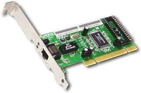
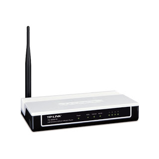
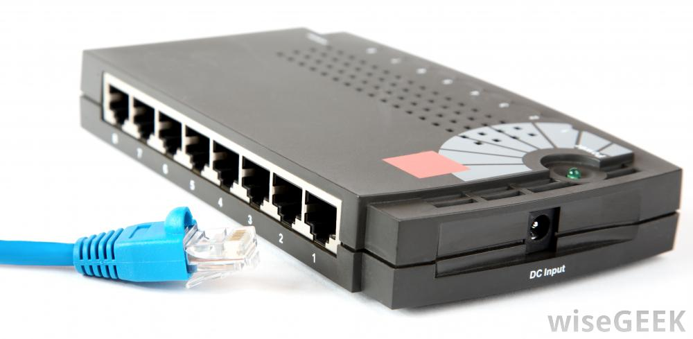

ประเภทของระบบเครือข่ายคอมพิวเตอร์
1. แบ่งตามตัวควบคุม โดยเอาตัวควบคุมเป็นหลัก จะมีส่วนประกอบ 2 ส่วน คือ ศูนย์กลางเครือข่าย และตัวลูกข่าย
2. แบ่งตามความเป็นเจ้าของ เป็นการแบ่งโดยถือเอาการเป็นเจ้าของเครือข่ายเป็นเกณฑ์ในการแบ่ง ซึ่งมี 2 ประเภท คือ เครือข่ายสาธารณะ และเครือข่ายเฉพาะ
3. แบ่งตามพื้นที่ เป็นการแบ่งโดยยึดเอาลักษณะของพื้นที่ของระบบเครือข่ายเป็นเกณฑ์ในการแบ่ง ซึ่งแบ่งออกเป็น 3 ประเภท คือ 1.เครือข่ายเฉพาะท้องถิ่น(LAN) 2.เครือข่ายเฉพาะองค์กร(MAN) 3.เครือข่ายทั่วไป(WAN)
องค์ประกอบของระบบเครือข่ายคอมพิวเตอร์
ระบบเครือข่ายคอมพิวเตอร์ มีองค์ประกอบที่สำคัญ เพื่อการเชื่อมต่อเป็นเครือข่ายคอมพิวเตอร์ ได้แก่ คอมพิวเตอร์แม่ข่าย (File Server) ช่องทางการสื่อสาร (Communication Chanel) สถานีงาน (Workstation or Terminal) และ อุปกรณ์ในเครือข่าย (Network Operation System)
คอมพิวเตอร์แม่ข่าย หมายถึงคอมพิวเตอร์ ที่ทำหน้าที่เป็นผู้ให้บริการทรัพยากร (Resources) ต่าง ๆ ซึ่งได้แก่ หน่วยประมวลผล หน่วยความจำ หน่วยความจำสำรอง ฐานข้อมูล และ โปรแกรมต่าง ๆ เป็นต้น ในระบบเครือข่ายท้องถิ่น (LAN) มักเรียกว่าคอมพิวเตอร์แม่ข่าย ในระบบเครือข่ายระยะไกล ที่ใช้เมนเฟรมคอมพิวเตอร์ หรือ มินิคอมพิวเตอร์เป็นศูนย์กลางของเครือข่าย เรานิยมเรียกว่า Host Computer และเรียกเครื่องที่รอรับบริการว่าลูกข่ายหรือสถานีงาน
ช่องทางการสื่อสาร หมายถึง สื่อกลางหรือเส้นทางที่ใช้เป็นทางผ่าน ในการรับส่งข้อมูล ระหว่างผู้รับ (Receiver) และผู้ส่งข้อมูล (Transmitter) ปัจจุบันมีช่องทางการสื่อสาร สำหรับการเชื่อมต่อเครือข่าย คอมพิวเตอร์มีหลายประเภทคือ สายโทรศัพท์แบบสายคู่ตีเกลียวไม่มีฉนวนหุ้ม (UTP) สายคู่ตีเกลียว แบบมีฉนวนหุ้ม (STP) สายโคแอคเชียล สายใยแก้วนำแสง คลื่นไมโครเวป และดาวเทียม เป็นต้น
สถานีงาน (Workstation or Terminal) หมายถึง อุปกรณ์หรือเครื่องไมโครคอมพิวเตอร์ ที่เชื่อมต่อ กับเครือข่ายคอมพิวเตอร์ ทำหน้าที่เป็นสถานีปลายทางหรือสถานีงาน ที่ได้รับการบริการจากเครื่อง คอมพิวเตอร์แม่ข่าย เรียกว่าเป็นคอมพิวเตอร์ลูกข่าย (Workstation) ในระบบเครือข่ายระยะใกล้ มักมีหน่วยประมวลผล หรือซีพียูของตนเอง ในระบบที่ใช้เครื่องคอมพิวเตอร์เมนเฟรม เป็นศูนย์กลาง เรียกสถานีปลายทางว่าเทอร์มินอล (Terminal) ประกอบด้วยจอภาพและแป้นพิมพ์เท่านั้น ไม่มีหน่วยประมวลกลางของตัวเอง ต้องใช้หน่วยประมวลผลของคอมพิวเตอร์ศูนย์กลางหรือ Host
อุปกรณ์ในเครือข่าย

– การ์ดเชื่อมต่อเครือข่าย (Network Interface Card :NIC) หมายถึง แผงวงจรสำหรับ ใช้ในการเชื่อมต่อสายสัญญาณของเครือข่าย ติดตั้งไว้ในเครื่องคอมพิวเตอร์ที่เป็นเครื่องแม่ข่าย และเครื่องที่เป็นลูกข่าย หน้าที่ของการ์ดนี้คือแปลงสัญญาณจากคอมพิวเตอร์ส่งผ่านไปตามสายสัญญาณ ทำให้คอมพิวเตอร์ในเครือข่ายแลกเปลี่ยนข้อมูลข่าวสารกันได้

โมเด็ม ( Modem : Modulator Demodulator) หมายถึง อุปกรณ์สำหรับการแปลงสัญญาณดิจิตอล (Digital) จากคอมพิวเตอร์ด้านผู้ส่ง เพื่อส่งไปตามสายสัญญาณข้อมูลแบบอนาลอก(Analog) เมื่อถึงคอมพิวเตอร์ด้านผู้รับ โมเด็มก็จะทำหน้าที่แปลงสัญญาณอนาลอก ให้เป็นดิจิตอลนำเข้าสู่เครื่องคอมพิวเตอร์ เพื่อทำการประมวลผล โดยปกติจะใช้โมเด็มกับระบบเครือข่ายระยะไกล โดยการใชสายโทรศัพท์เป็นสื่อกลาง เช่น เครือข่ายอินเทอร์เน็ต เป็นต้น

ฮับ ( Hub) คือ อุปกรณ์เชื่อมต่อที่ใช้เป็นจุดรวม และ แยกสายสัญญาณ เพื่อให้เกิดความสะดวก ในการเชื่อมต่อของเครือข่ายแบบดาว (Star) โดยปกติใช้เป็นจุดรวมการเชื่อมต่อสายสัญญาณระหว่าง File Server กับ Workstation ต่าง ๆ
โครงสร้างระบบคอมพิวเตอร์
องค์ประกอบของคอมพิวเตอร์
วงจรการทำงานของคอมพิวเตอร์
ความหมายและความเป็นมา
คอมพิวเตอร์
สรุป โครงสร้างระบบคอมพิวเตอร์
ภาษาคอมพิวเตอร์
ข้อมูล ผู้จัดทำ